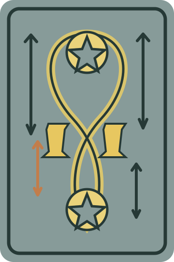
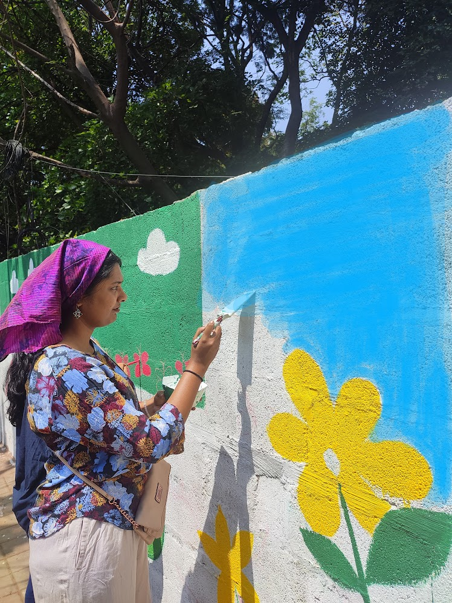

01 / cards & curiosity
TarotQuest
A space to explore tarot when the deck has you wondering what a card might mean.
Enter TarotQuestSometimes curiosity wants its own little corner of the internet. These are a few of mine.

A space to explore tarot when the deck has you wondering what a card might mean.
Enter TarotQuest
My art, creative process, and the workshops I offer for kids and adults.
Browse The Kala OdysseyA Minecraft-themed career map: my professional journey, reimagined as an Overworld to explore.
Explore the OverworldA Harry Potter–themed wizarding-world game, made for a little magical escapism.
Enter the wizarding worldThere’s room on this shelf for whatever I make next.